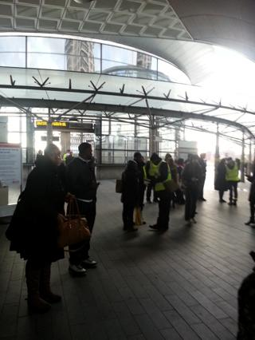
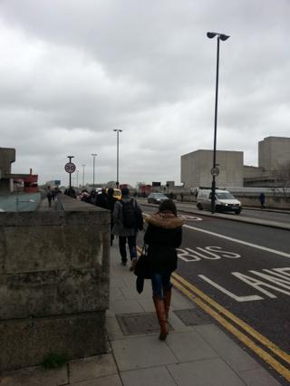
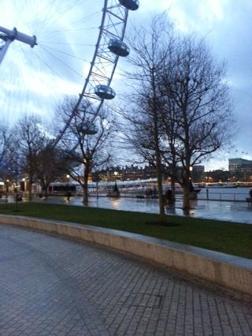
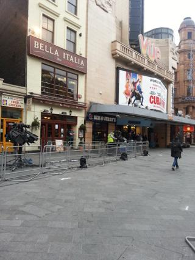
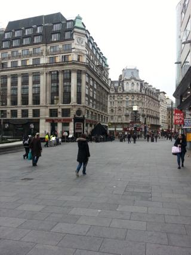
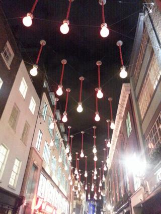
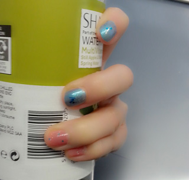
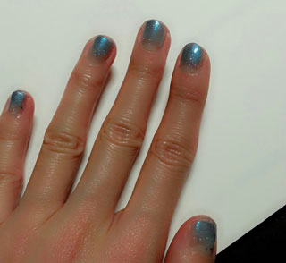

런던 지하철 파업
요게 수요일(5일) 8.50am 정도...? ^^;;
(집에서 8.30am정도엔 나가야 회사에 9-9.10am 사이도착하는데
요즘 겨울이라 ㅡㅡ;;;;;; 몬일어남;;;;)
화욜날 집에가기전에
낼부터 지하철 파업이라고 했는데 과연;;
아예 입구가 폐쇄되어 있었음;;;; 역앞에는 안내하는사람들/경찰들이 나와서
각 목적지까지 버스타고 가는법 안내중^^;;;
20분이면 갈 거리를 1시간40분 걸려서 도착했다;;;
사무실 도착하니 시간은 10시반 ^^;;;;
버스타고 워털루에서 내려서
코벤트가든이나 홀본쪽으로 가는 버스를 타려했으나
줄이 어마무지해서 포기;;;
혹시나하는마음에 역앞에 나와있는 경찰에게 물어보니
넘 빵끗웃으면서 걷는거 좋아하니? 런던브릿지만 건너면
니 목적지에 갈수있어 라고 ㅋㅋㅋㅋㅋㅋㅋ
(아니 그건 이미 아는디 넘 춥다구요 ㅜㅜ ㅋㅋㅋ)
+ 내 앞 30대후반정도 되어보이는 샐러리맨에게도
똑같이 런던브릿지 건너가라고 안내하니까
안내받던사람 뭐 씹은표정으로
지금 나보고 아침부터 (이추위에) 30분이상 걷는걸
제안하는거냐고 말하니까
경찰아저씨 엄지를 세우고 넘 환하게 웃으면서
nice walk in the morning 이래 ㅋㅋㅋㅋ
아저씨 최고에요 ㅋㅋㅋㅋㅋㅋㅋ

런던브릿지를 건너는 로동자들 ㅋㅋㅋㅋㅋㅋ
아침부터 이게 왠 민족대이동이야 ㅋㅋㅋㅋㅋ
여튼 슬렁슬렁 걸어가다 극적으로 코벤트가든/홀본쪽 지나가는
버스타고 또다시 내려서 레스터스퀘어를 지나
회사에 도착했다는 그런이야기^^;;;

덕분에 이날 집에도 한시간 일찍보내줬다
지하철파업하니까 일찍들 가라고해서
버스타고 또 한시간반정도 걸려서 집에도착^^;;;;
런던센트럴에서 2존 이동하는데 한시간반......OTL

그리고 목요일아침 또다시 버스여행
잼난건 2시간 걸리니까 2시간 일찍일어나서
아침 출근시간 맞춰오는게 아니라
다들 런던지하철파업이 잘못임 난 잘못없음 이런마인드로
비슷한시간대에 나와서 늦게 출근한다는것 ㅋㅋㅋ
또다시 코벤트가든 근처내려서 슬렁슬렁 걷는중
저녁에 무슨행사있는지 한참 설치중이었당

아침에만 볼수있는 한산한 레스터스퀘어^^***

carnaby street 이쁘당//

Frozen보구 나도 엘사네일~~!! ;ㅂ; 이러면서 발라봤지만
실패OTL 평소에 바르던거랑 별 차이없당;;

해서 오늘 다시 도전
.......그냥 파란색^^;;;
토요일 비올때는 외출하고
정작 오늘은 체력방전어서 종일 집에만있었다;;;
날씨좋은날 나가놀고싶어라 ;ㅂ;